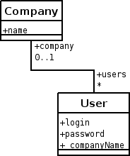

Dariusz Cieslak, cieslakd@users.sourceforge.net
 PyDAO is very thin object-relational mapper similar to Hibernate (but much simpler). It's created to speed-up application development. It's very simple, but powerful, based on POPO (Plain Old Python Objects).
You can reach latest version of PyDAO on SourceForge:
http://sourceforge.net/projects/pydao
class User:
def __init__(self):
self.id = None
self.login = None
self.password = None
dao = pydao.InMemoryDao()
# filling database
user = User()
user.login = "user1"
user.password = "roh8OoPh"
dao.save(user)
# filtering based on example
userSearch = User()
userSearch.login = "user1"
userList = dao.list(userSearch)
# updating
user.password = "eew8Me8g"
dao.update(user)
More examples how to use API can be found in AbstractDaoTest.py and SqlDaoTest.py. Also see: PyDAO User Guide.
You can redirect logs to any open stream (sys.stderr for example) to see API calls and resulting SQL queries (if back-end is SQL type).
save(): User {login='u1' }
INSERT INTO TEST_USER(login,password,companyID) VALUES(%s,%s,%s)
list(): User {}
SELECT T.*, TC.NAME AS _companyName FROM TEST_USER T\
LEFT JOIN TEST_COMPANY TC ON T.COMPANYID = TC.ID
save(): User {login='u2' }
INSERT INTO TEST_USER(login,password,companyID) VALUES(%s,%s,%s)
list(): User {}
SELECT T.*, TC.NAME AS _companyName FROM TEST_USER T\
LEFT JOIN TEST_COMPANY TC ON T.COMPANYID = TC.ID
delete(): User {}
DELETE FROM TEST_USER